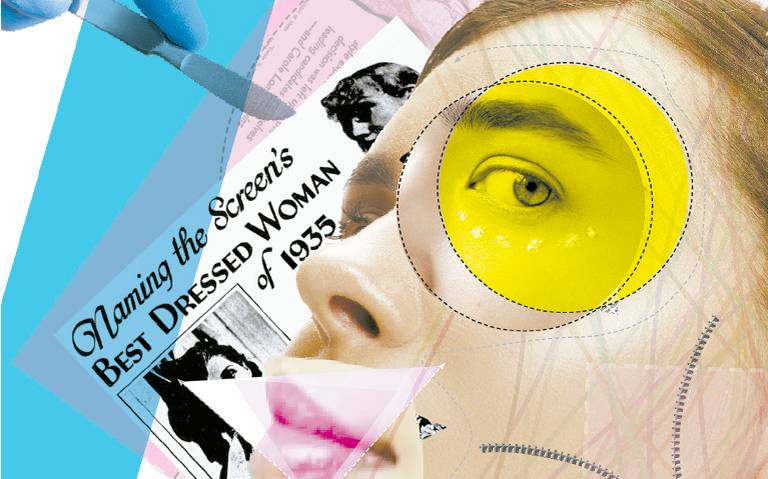
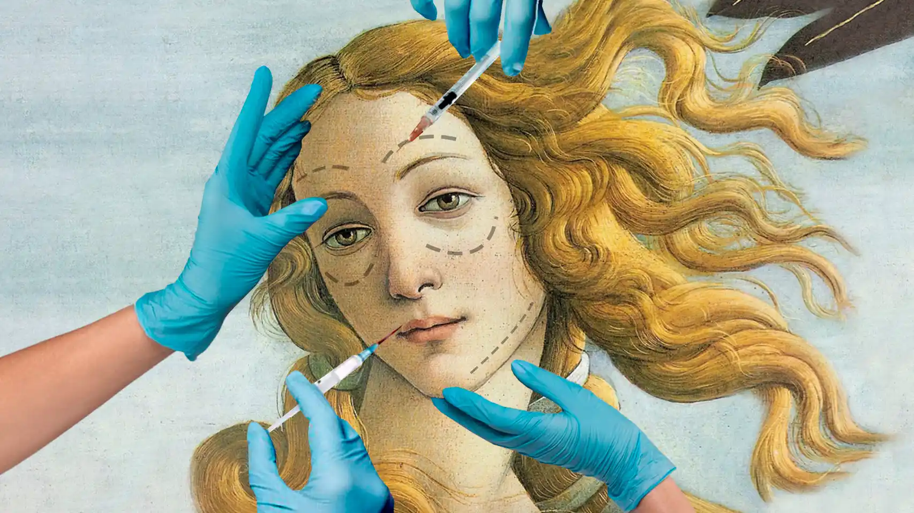

Canon de belleza
El canon de belleza es una idea o estándar de lo que se considera hermoso o atractivo en una sociedad. Influye en cómo las personas perciben su apariencia y puede tener un impacto en su autoestima y confianza.
Por lo tanto es importante reflexionar sobre cómo estos ideales de belleza afectan a las personas y cómo podemos promover una imagen corporal positiva y saludable.
¿Qué es el canon de belleza?
36 comentarios
por Paula Rasillo y Carmen Reyes

Cosmética
La cosmética juega un papel importante en el canon de belleza. Puede resaltar rasgos deseables y promover ideales de belleza a través de la publicidad y las redes sociales, lo que afecta la percepción de la apariencia y la autoestima de las personas.
La Industria Cosmética: Evolución y Responsabilidad en la Era Moderna.
48 comentarios
por Maria Jose Gallardo
Salud mental
El canon de belleza impone estándares de apariencia que pueden generar presión y ansiedad en aquellos que no se ajustan a ellos. Esto puede llevar a problemas de autoestima, baja confianza en sí mismos y trastornos alimenticios.
El Impacto del Canon de Belleza en la Sociedad Contemporánea.
24 comentarios
por Edoardo Samayoa
Historia
A lo largo de la historia, el canon de belleza ha experimentado cambios significativos. En diferentes épocas y culturas, se han valorado diferentes características físicas y estilos de belleza. Desde la antigüedad hasta la actualidad, hemos visto cómo los estándares de belleza han evolucionado y se han adaptado a las tendencias y valores de cada época.
¿Desde cuando existe esto?
72 comentarios
por Daniela Lemus